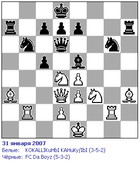
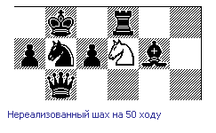
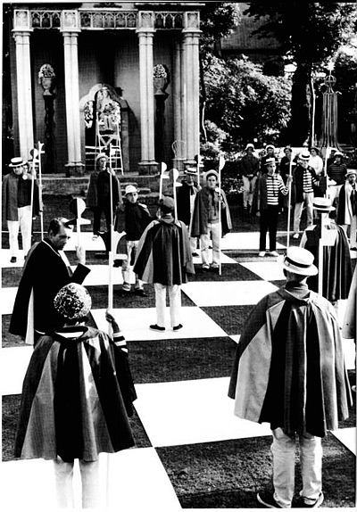

Белые начинают и проигрывают
Дарюс Каспаровайтис — штангист и шахматист

На первый взгляд у белых всё хорошо. Ход защитником Л:b6 даёт возможность начать атаку (ответить Ф:b6 нельзя, из-за угрозы К:e5), а слоны по флангам должны обеспечить должный её исход.
Но на девятнадцатом ходу оказывается, что пешечная оборона чёрных держится очень крепко. А крайние защитники способны за пару ходов захватить крайние вертикали и свести на нет всю концентрацию белых в центре поля.

После 55 хода положение белых стало критическим (шах королю пешкой!) и к 90 ходу они признали своё поражение.
